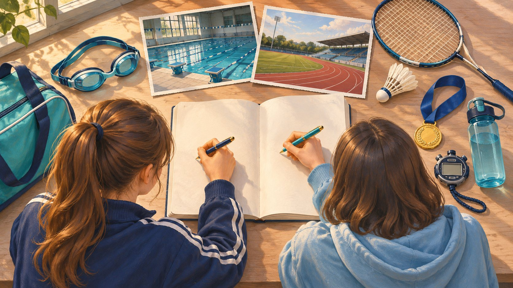
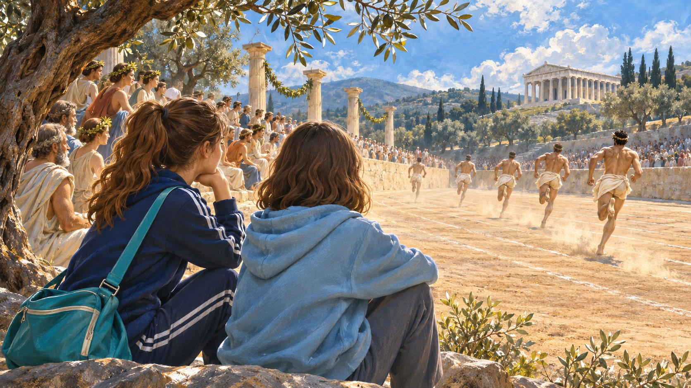
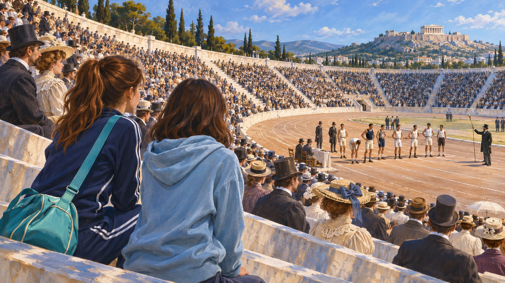
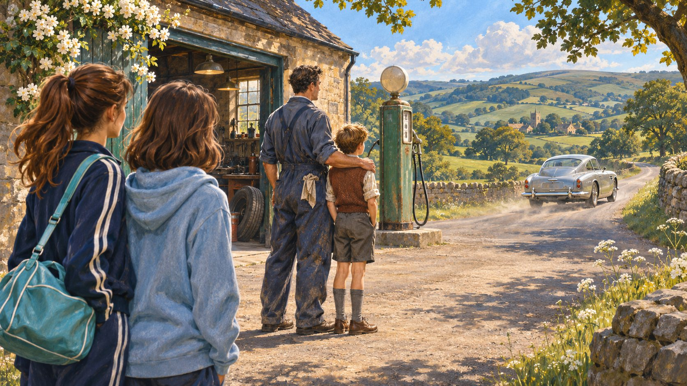
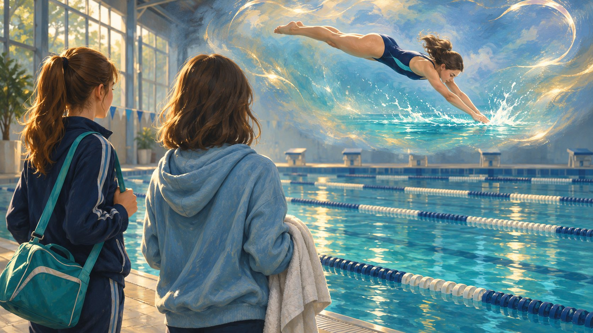
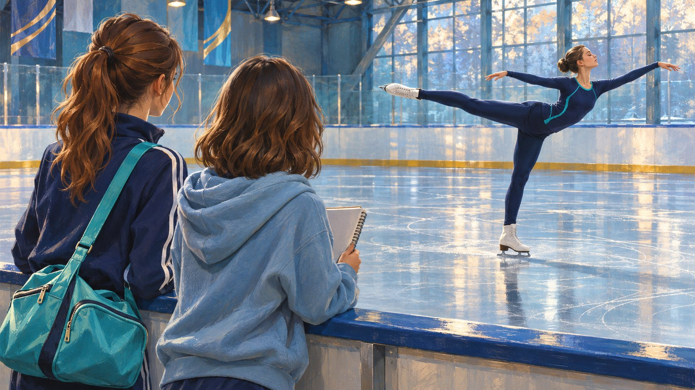

Sport in Our Life
Olympic Games, athletes & wishes
Learn the sport vocabulary of Afanasyeva Unit 8, practise the Subjunctive Mood (If I were… I would…) and do vs make, read History of the Olympic Games and an excerpt from Roald Dahl's The Great Shooting Day, and prepare to speak and write about your favourite sport.
Warm-up · sports & games in your life
Pick the best answer. You can change your choice and try again.
Vocabulary · 20 sport words

Click any card to flip it. Front = word + IPA. Back = Russian + example.
15 useful phrases · talking about sport
Expressions you'll use in exam speaking, interviews, and everyday talk.
| Phrase | Meaning | Example |
|---|---|---|
| to go in for sport | to spend time regularly doing a sport | What sport does your sister go in for? |
| to work out (in the gym) | to do physical exercises | I work out three times a week. |
| to train for a competition | to prepare for a sports event | He trains for a marathon every spring. |
| to take part in a tournament | to join a sports event | She took part in the Moscow Open. |
| to set / break a record | to establish / beat an official best result | Usain Bolt broke the 100 m record in 2009. |
| to score points / goals | to add to the score | He scored twenty points in the first quarter. |
| to win / to lose | to end as the winner / loser | We lost at home but won away. |
| to win a prize / a cup | to receive the main award | Russia won the cup three years in a row. |
| to draw the game | to finish with equal scores | The match was drawn 1-1. |
| to be / to get fit | to be / become in good physical shape | I joined a club to get fit. |
| to be in good form | to be playing or performing well | The goalkeeper was in excellent form. |
| to beat a rival | to defeat an opponent | We beat our main rivals 3-0. |
| to call oneself a fan | to say you support a sport / team | Can you call yourself a fan of hockey? |
| to cheer for / shout for | to support a team by shouting | The whole class cheered for our team. |
| to practise regularly | to train often, as a habit | Great results come only if you practise regularly. |
Vocabulary practice · definitions & gaps
Part A — match definitions. Part B — fill in the correct word.
A. Match the word with its definition
B. Fill in the correct word (went in for, keep fit, score, draw, win, break, fan, athletes)
Subjunctive Mood · If I were… I would…
The new grammar of Unit 8 — unreal present wishes and conditions.
Theory in one block
Verb to be uses were for all persons.
If she had more time, she could join the team.
If only she knew the rules of rugby!
A. Rewrite as wishes · 8 patterns from the textbook
B. Pick the right form
do vs make · collocations for sport & life
Afanasyeva, Ex. 11, p. 261 — a classic revision table plus 10 gap-fill sentences.
| to do | to make |
|---|---|
| to do (morning) exercises | to make a mistake |
| to do the cooking / cleaning / shopping / ironing / reading | to make dinner |
| to do one's teeth / hair | to make money |
| to do one's best | to make a decision |
| to do one's homework | to make progress |
| to do business | to make a fire |
| to do a subject (geography, P.T., etc.) | to make a bed |
| to do one's best | to make a fortune |
| to do well | to make a choice |
| to do a translation | to make an effort |
| to do the sights of a city | to make friends with smb |
| to do a bomb (harm, wrong) to smb | to make a law |
| to do with something (need, want) | to make a list |
| to do an interview | to make a speech |
Fill in with do or make (correct form)
Exam-style grammar · a sports club
OGE Task 20-28 format. Open the brackets to put the word into the correct form.
Our school sports club (20) ___ (to open) three years ago. Since then it (21) ___ (to become) the most popular club in the school. If I (22) ___ (to be) you, I would join it this autumn — the coaches (23) ___ (to teach) us football, athletics and judo. Yesterday our team (24) ___ (to win) the regional tournament, so now we (25) ___ (to prepare) for the national championship. I wish I (26) ___ (to play) as well as our captain. He (27) ___ (never / to miss) a training session, and he always (28) ___ (to do) his best.
Exam-style word formation · athletes & sports
OGE Task 29-34 format. Change the word in capitals so that it fits.
Reading · History of the Olympic Games

Textbook reading from Afanasyeva Unit 8, pp. 263-265. Read, then answer the questions.
The Olympic Games are an international sports festival that began in ancient Greece. The original Greek games took place every fourth year for several hundred years, until they were brought to an end in the early Christian era. The Olympic Games were performed in 1896, and since then they have been staged every fourth year, except during World War I and World War II. Perhaps the main difference between the ancient and modern Olympics is that the ancient Greeks the Games were a way of saluting their gods, when the modern Games are a manner of saluting the athletic talents of people of all nations. The original Olympic competitions in music, oratory, and theatre performances as well. The modern Games haven't got them, but they represent much more sports than before. For two weeks and a half every international conflicts must be stopped and replaced with friendly competitions. This is the noble idea on which the modern Olympic movement is based.
The earliest record of the Olympic Games goes back to 776 BC, but historians think that the Games began well before then. The ancient Games were held in honour of Zeus, the most important god for ancient Greeks. According to the earliest records, only one athletic event was held in the ancient Olympics — a footrace of about 183 metres, or the length of the stadium. A cook, Coroibus of Elis, was the first recorded winner. Only men were allowed to compete in the games.
When the powerful, warlike Spartans began to compete, they changed the programme of the Games. The 18th Olympics already included wrestling and pentathlon, and later Games — chariot races and other sports. The winners of the Games were highly praised and honoured for their results. In 394 AD the Games were officially ended by the Roman emperor Theodosius, who felt that they had pagan meaning.
Pierre de Coubertin, a young French nobleman, had an idea to bring the Olympic Games back to life. With the help of the people who supported him he managed to organize the first modern Olympic Games in 1896. Baron de Coubertin had planned to hold the Olympic Games in France, but the representatives from the nine countries that supported his idea decided that Greece was the right place to host the first Olympic Games. The nine countries were Belgium, Great Britain, France, Greece, Italy, Russia, Spain, Sweden and the United States.
They agreed that every four years the Olympics would move to other great cities of the world. The Athens Games in 1896 were a success. Athletes from thirteen countries competed in nine sports. A second Olympiad was held in France in 1900. The 2004 Summer Olympics was held in Athens, Greece and hosted 201 countries. The USA took the first place. And Russia took the third place.
Beginning in 1924 Winter Olympics were included. They were held in the same year as the Summer Games, but starting in 1994, the Winter Games are held two years after the Summer Games. The Olympics are governed by the International Olympic Committee (IOC), situated in Lausanne, Switzerland.
A. True / False / Not Stated
B. Short-answer comprehension
Olympic Games chart · fill in the gaps

Afanasyeva, Ex. 63. The first seven Olympic Games — complete the table from the text.
| N° | Year | Continent | Country | City |
|---|---|---|---|---|
| I | 1896 | Europe | Greece | Athens |
| II | 1900 | Europe | France | Paris |
| III | 1904 | North America | the USA | St Louis |
| IV | 1908 | Europe | Great Britain | London |
| V | 1912 | Europe | Sweden | Stockholm |
| VI | 1916 | did not take place because of World War I (meant to be in Berlin, Germany) | ||
| VII | 1920 | Europe | Belgium | Antwerp [ˈæntwəːp] |
Olympic quiz — short answers
Reading · The Great Shooting Day (Roald Dahl)

Danny the Champion of the World, abridged. Read, then say why Danny and his father disliked Mr Victor Hazell.
Mr Victor Hazell was rich beyond words, and his property included for miles around the whole of either side of the valley. All the land around us belonged to him, everything on either side of the road, everything except the small patch of ground on which Mr Hazell's filling station stood. That patch belonged to my father. It was a little island in the middle of the vast ocean of Mr Hazell's property.
Mr Victor Hazell was a snob and he tried desperately to get on with what he believed were the right kind of folk. He hunted with the hounds and gave shooting parties, and every weekend he drove his enormous silver Rolls-Royce past our filling station on his way to the factory.
"No," my father used to say, "I do not like Mr Victor Hazell one little bit. I haven't forgotten the way he spoke to you last year when he came in for a fill up."
I hadn't forgotten it either. Mr Hazell had arrived in his expensive Rolls-Royce and had said to me, "Fill her up and look sharp about it." I was eight years old at the time, he didn't get out of the car, he just handed me the key to the cap of the gasoline tank and so he barked out, "And keep your filthy little hands to yourself, do you understand?" I didn't understand at all, as I said, "What do you mean, sir?"
There was a walking stick on the seat. He picked it up and pointed it at me like a pistol. "If you spoil my car, I'll beat you up," he shouted.
My father was out of the workshop almost before Mr Hazell had finished speaking. He came up to the window of the car and placed his hands on it. "I don't like you speaking to my son like that," he said. His voice was dangerously soft. "You had no reason to threaten him, my father went on. "He has done nothing wrong. Next time you threaten someone who's just a child, my father said. "Like me, for instance."
Mr Hazell did not look at him. He sat quite still in the seat of his Rolls-Royce, his tiny piggy eyes staring straight ahead. "Now go away, please," my father said. "We do not wish to serve you." He took the key from his hand and threw it through the window. The Rolls-Royce drove away fast in a cloud of dust. A silence fell between us.
Choose the right item (Ex. 47, abridged)
Discussion
Phrasal verbs · to do
Afanasyeva Unit 8, Ex. 35. Fill in away with / out / up / with.
| Phrasal verb | Meaning (RU) | Example |
|---|---|---|
| to do away with sth | покончить с чем-л., отменить | The government has done away with the old law. |
| to do sth out | вычистить, прибраться | I'll do out the living room. |
| to do sth up | a) застегнуть; b) привести в порядок, отремонтировать | Do up your coat, it's cold. · They are doing up the house at the back. |
| to do with / could do with | хотеть, нуждаться (часто с could) | I could do with a sandwich, I'm hungry. |
Fill in the gaps
Sports by age · what's the best time to start?
Afanasyeva Ex. 59. Match the age group with the sport that is usually recommended.
Match the age group with the sport
Famous Russian athletes · match sport to person

Ex. 62. These are some of the athletes who helped to make history in Russian sport.
Interview English · asking an athlete
Imagine you can meet a sports star — Patrick (football) or Sophia (figure skating). Ask them 5 questions each.
Journalist: How long have you been playing football professionally?
Patrick: I've been playing for ten years. I started when I was nine.
Journalist: What would you do if you weren't a professional athlete?
Patrick: If I weren't an athlete, I would probably be a coach — I love teaching kids.
Journalist: How do you keep fit between games?
Patrick: I train five times a week, work out in the gym and try to eat well.
Journalist: What is the most difficult part of your job?
Patrick: Keeping my concentration during long matches, and dealing with injuries.
Journalist: If you could give young players one piece of advice, what would it be?
Patrick: If you want to become good, practise regularly — talent is only ten per cent.
Reported speech · turn direct into indirect
Over to you — 5 questions for Sophia (figure skating)
Writing · My Favourite Sport

Follow the Afanasyeva "My Favourite Sport" plan (Ex. 69), 90-110 words.
Plan (write 1-2 sentences for each)
- What sport you love and when you started (age).
- Where / how often you train — indoors or outdoors, with a coach or alone.
- Equipment you need and the clothes you wear.
- Why you love it (keeps me fit, I meet friends, I compete in tournaments…).
- What you'd do if you could devote all your time to this sport.
Homework · choose one task
Do only one of the three. Minimum 90 words. Use at least two phrases from the vocab list.
Imagine you are at the Olympics. Write a letter home describing the opening ceremony, the atmosphere, and one event you watched.
Afanasyeva Ex. 68. Write 10 sentences starting with I wish… / If only… connected with sport (your form, equipment, competitions).
Afanasyeva Ex. 71. Write a postcard describing a recent sports match (football, basketball or hockey) that you watched on TV or at the stadium.
Workbook · Subjunctive drill (10 sentences)
Open the brackets and use the correct form.
Workbook · articles with geographical names
Afanasyeva Ex. 10. Add the if necessary, or write a dash (—).
Workbook · unless & if · as soon as / till
Ex. 9 (p. 258). Fill in with: as soon as, after, before, in case, if, on condition that, till (until), unless.
Workbook · do or make · proverbs & sayings
Ex. 75. Match the two parts of each proverb and say if they use make or do.
Workbook · formal vs informal English
Afanasyeva Ex. 34. Match the neutral/formal word with its informal pair.
ОГЭ · Task 35 · Электронное письмо (100-120 слов)
Формат ОГЭ 2026: ответить на 3 вопроса, объём 100-120 слов (<90 = 0 баллов). Критерии: К1 комм. задача (3) + К2 организация (2) + К3 лекс-грамм (3) + К4 орф-пункт (2) = 10 баллов.
You have 30 minutes to do this task.
You have received an email message from your English-speaking pen friend James:
…Last weekend I took part in my first school athletics competition and finished second in the 400 m race! I love running, it's my favourite sport…
…What sports do you go in for and why? How often do you train, and where? What would you do if you had a chance to meet a famous athlete?
By the way, I'm learning German now…
Write an email to James.
In your message:
— answer his questions;
— ask 3 questions about his German classes.
Write 100-120 words. Remember the rules of letter writing.
ОГЭ · Устное задание 3 · Монолог 2 минуты
Формат ОГЭ 2026: 10-12 фраз, 1.5 мин подготовки + 2 мин ответ. Критерии: К1 комм. задача (3) + К2 организация (2) + К3 язык (2) = 7 баллов. Обязательные frames: Today I would like to give a talk about… / That's all I wanted to say. Thanks for your attention.
Task 3. You are going to give a talk about sport. You will have to start in 1.5 minutes and will speak for not more than 2 minutes (10-12 sentences). In your talk remember to speak about:
- what kinds of sport are popular with teenagers in your country;
- what sport you go in for and why;
- whether it's important for teenagers to go in for sport, and why / why not;
- what your attitude to professional sport is.
You have to talk continuously, starting with: «Today I would like to give a talk about sport…»
① Opener (1): Today I would like to give a talk about sport.
② Aspect 1 — popular sports with teens (2-3): In Russia the most popular sports with teenagers are football, basketball and swimming…
③ Aspect 2 — my sport + why (2-3): As for me, I go in for… because…
④ Aspect 3 — importance for teens (2-3): I'm sure sport is very important for teenagers because…
⑤ Aspect 4 — professional sport (2-3): Speaking about professional sport, I think…
⑥ Closer (1): That's all I wanted to say. Thanks for your attention.
ОГЭ · Listening Task 1 · match 4 speakers & 5 statements
Format ОГЭ 2026: 4 speakers → 5 statements (one is extra). Слушай 4 клипа по порядку (BrE+AmE голоса, edge-tts).
Statements (A-E)
- A. Sport takes too much time away from school work.
- B. I love doing sport outdoors with my family.
- C. I had to give up my sport because of an injury.
- D. My school doesn't offer enough different sports.
- E. Professional sport is my dream.
Match: speaker → statement
📜 Transcripts (для учителя — читать вслух)
Speaker 1 — Marta. My favourite kind of sport is hiking. Every weekend my parents and my little brother and I go to the forest or the mountains near our town. We walk for hours, take photos and have a picnic. I don't like gyms or stadiums — I love being outside with my family. For me it's the best way to spend a Sunday.
Speaker 2 — Jack. I started playing football when I was five, and now I train with the junior team every day after school. My coach says I have real talent. I know many people become professional footballers only when they're really lucky, but I'll do my best. One day I would like to play for Manchester City. That's what I'm working for.
Speaker 3 — Sofia. Last year I was in the school swimming team and I was really happy about it. But in May I hurt my shoulder badly during training, and the doctor said I had to stop swimming for a year. Now I only watch competitions on TV. I miss my team a lot, but I know I'll come back when my shoulder is healthy.
Speaker 4 — Tom. I'd love to go in for fencing or martial arts, but at our school we only have football, basketball and volleyball. That's a pity. My cousin goes to a school in Moscow and they have everything — judo, archery, even horse riding. I wish our head teacher would open more sports clubs for us.
ФИПИ · полный тренировочный вариант ОГЭ по теме «Спорт»
Задания из открытого банка ФИПИ — 5 разделов (Аудирование, Чтение, Грамматика и лексика, Письмо, Устная часть). Источник: fipi.ru/oge/otkrytyy-bank-zadaniy-oge, компиляция SkyTeach / Maria Tsedrik 2021.
Раздел 1 · Аудирование · Задание 1-4 4 MCQ
Вы услышите 4 коротких текста. Выберите вариант 1, 2 или 3. Каждый клип можно слушать несколько раз.
Раздел 1 · Задание 5 match 5 speakers → 6 topics
A, B, C, D, E — пять говорящих. 1-6 — рубрики (одна лишняя). Клипы ниже.
- the local sports centre
- doing sports at home
- his/her typical day off
- a disagreement with a friend
- healthy eating habits
- the most popular sports
Раздел 1 · Задание 6-11 interview gap-fill
Прослушайте интервью журналиста с девочкой-подростком. Впишите не более одного слова (без артиклей). Числа — буквами.
Раздел 2 · Чтение · Задание 12 6 texts about Olympics → match 7 Qs (1 extra)
A. A victory in the Olympic Games in Ancient Greece made a man a national hero and all the little children wanted to be like him. The first champions got free food and housing for their whole lives. They were mentioned in poems and became well-known all over the country. Sculptors even built statues of the competitors. Everyone respected and admired them.
B. Olympia was a relatively peaceful and neutral area. It had a beautiful green valley which was very suitable for all kinds of sports competitions. People could easily get to Olympia because there were two rivers nearby. It was impossible to find a better place anywhere else in Greece.
C. The Olympic Museum was founded in 1993 in Switzerland. It is surrounded by a park with wonderful works of art based on a sporting theme. It has a big collection of pieces connected with the Olympic movement. It also has the largest number of books and documents about the Games in the world. No wonder the place is one of the main tourist attractions.
D. The modern Olympics began in 1894. Baron Pierre de Coubertin, a Frenchman, decided to bring back the ancient Greek tradition. He wanted to begin a sports festival to celebrate health, youth and peace. The first modern Olympiad took place in Athens in 1896. Since then, the Olympic Games have been held every four years with two exceptions because of the two world wars.
E. The Olympic Games traditionally start with the "Parade of the Nations". Most of the participating athletes walk out into the stadium. The Greek athletes open the parade and the hosts appear on stadium the last. The name of each country is announced in French and English, the official languages of the Olympic Games, and the language spoken in the country that organizes the Games.
F. The five Olympic rings represent the five main regions of the world — Africa, the Americas, Asia, Europe and Oceania. They are blue, yellow, black, green and red because every national flag in the world includes one of these five colours. The rings are connected and there is a reason for it. It's done to show that the Games are for all nations. All good sportsmen can come and compete against one another in unity.
Для каждого вопроса — выберите текст (A-F). Один вопрос останется без ответа.
Раздел 2 · Задание 13-19 David Beckham · T/F/NS
David Beckham — is there a more famous and lovable celebrity? The footballer who played for such famous teams as Manchester United and Real Madrid is also a fashion model and a successful businessman.
David Beckham was born on May 2, 1975, in London, England. His father Ted Beckham was a kitchen fitter and his mother Sandra, a hair stylist. David Beckham was the family's only son. A middle child between two sisters, David grew up with parents and relatives who were great fans of Manchester United, England's legendary football club. From childhood, David was a promising footballer. At 11 he won the prestigious Bobby Charlton Soccer Schools National Skills Competition. David was noticed by Manchester United team officials, who asked him to try out for the club's youth league. By the age of 16, Beckham had to drop out of school. He left home to play for his favourite team. Two years later he became a full-time player for Manchester United and one of its leading figures.
From 1992 to 2003, playing for Manchester United, David Beckham scored 85 goals. Every time he had a game, he wore different football boots — it was a sort of ritual for good luck.
In 2003, David unexpectedly left his beloved team for Real Madrid. The reason was the growing conflict between David Beckham and Manchester's manager, Sir Alex Ferguson. Once Sir Alex Ferguson fined David for babysitting with his sick child, while his wife Victoria, a designer, was at a London Fashion Week Event. The fine was really large. The incident caused a serious personal tension between the two men and ended in Beckham moving to the other club.
In Real Madrid, David Beckham was not allowed to wear his favourite number seven, because the right to wear it was written into the contract of another player. Instead, David decided to wear a shirt with number 23, which was the number of his favourite basketball player Michael Jordan. Though David Beckham immediately became very popular with the Real Madrid fans and his shirt sales made a lot of money for the football club, the team didn't win any serious tournaments. Perhaps, it was one of the reasons why in 2007 Beckham signed a five-year contract to play for the Los Angeles Galaxy and moved to America. However, his career in America was a rocky one — numerous injuries affected him. In May 2013, David Beckham announced his plans to retire.
It's important to say that David Beckham has always been a devoted husband and a loving father. David and his wife Victoria have three sons and a daughter. They say the boys are being trained as 'bodyguards' for their little sister Harper. The youngest, Cruz, has been practising Taekwondo, Brooklyn is interested in boxing, and the oldest, Romeo, does karate. They are preparing early so that when Harper is older, "they will all be ready to protect her from noisy fans," David says.
Раздел 3 · Грамматика · Задание 20-28 · «Bad luck» (Jenny) word change
Jenny loved climbing. It was a strange hobby for a girl and her family wanted her to stop it, but Jenny (20) ___ NOT/LISTEN to anybody.
"There are still several trees in the garden I haven't climbed yet," Jenny said.
One day, she (21) ___ CLIMB the apple tree in the yard, when she suddenly slipped and fell down.
Jenny (22) ___ FEEL a terrible pain and started to cry. Her mum came outside and saw that her hand was swollen and looked dark.
"I wish you (23) ___ HAVE some other hobby!" she said. "Jenny, please, promise (24) ___ I that you'll never do this silly climbing again!" Jenny nodded.
Her mother took Jenny to the doctor. It turned out that two of the bones (25) ___ BREAK.
For the (26) ___ ONE time Jenny had a cast on her arm.
For several weeks, Jenny had to have the cast on. At last she could get back to her favourite (27) ___ ACTIVITY which were running, swimming, and climbing.
But now climbing was out — Jenny was determined to stick to her promise. "If I break my promise, mum (28) ___ GET upset."
Раздел 3 · Задание 29-34 · The Grand National word formation
The Grand National is a horse race which is held every year in Liverpool. This (29) ___ COMPETE involves a four-mile race, during which the horses have to go over 30 fences.
The most (30) ___ FAME horse in the Grand National was called 'Red Rum'. He was the (31) ___ WIN of the race three times during the 1970s.
The race is not only a sporting event but a (32) ___ FASHION social event too. Men and women wear beautiful clothes, and the tickets to the race are very (33) ___ EXPENSE.
The Grand National is broadcast all over the world. However, many people think it's (34) ___ FAIR and cruel to make the animals race and jump for people's entertainment.
Раздел 4 · Письмо · Задание 35 4 варианта писем от John — выбери 1
4 реальных варианта Task 35 из открытого банка ФИПИ на тему sport. 100-120 слов, ответить на 3 Qs + задать 3 Qs.
Вариант A · Choosing a sport
From: John.green@yahoo.uk.com · Subject: Sports
…I've decided to take up some sport to be fitter and feel better. But I'm in two minds what to choose. We have a very good basketball team and a super tennis coach…
…What kinds of sports are popular with teenagers in Russia? What sports facilities do you have in your school? What kind of sports competitions do you have at school?…
Вариант B · Mountain biker brother
From: John.green@yahoo.uk.com · Subject: Sports
…My older brother has got a new hobby — he has become a mountain biker. I know that mountain biking is a dangerous kind of sport and I worry about him. I would like him to spend more time at home. I wish he had chosen a safer entertainment…
…What indoor sports are most popular with teenagers in your country? Why do teenagers often do extreme sports? What kind of sport is your favourite?…
Вариант C · Tennis club member
From: John.green@yahoo.uk.com · Subject: Sports
…As you know, I am a tennis club member. I go there regularly, but my best friend doesn't want to do any sport…
…Should people do sports, why? What sports do you like? What do you do in your PE lessons?…
Вариант D · Basketball star visit
From: John.green@yahoo.uk.com · Subject: Sports
…Yesterday our teacher asked us to stay after classes. A basketball star came to us to talk about sport in everyday life. The way he spoke about being a teenager was funny. He said he didn't like getting up early!…
…When do you get up in the morning? What do you do to keep fit? Would you like to go in for sports professionally, why?…
Раздел 5 · Устная часть · Задание 1 (вариант A) Read aloud · Netball
1.5 мин подготовки + 2 мин чтения вслух. Модель чтения — ниже (BrE голос).
Netball is played by over 20 million people in more than 70 countries of the world. It was invented in 1892 as women's basketball. However, netball is different from basketball in many ways. For example, the ball and the basket are smaller and the court is bigger. The players cannot run with the ball. They are not allowed to touch the players who they are playing with. Netball has seven players in each team (not five as in basketball). During the 20th century, the game became very popular in English-speaking countries. Traditionally, only girls and women have played netball. Nowadays, netball is the number one women's sport in the world but boys and men are starting to play it too.
Задание 1 (вариант B) · Table Tennis
Table tennis is the third most played sport in the world after football and cricket. It is considered to be an indoor version of Lawn Tennis. However, they have a lot of differences. Table tennis has a different scoring system, a smaller ball, smaller rackets, and a smaller playing area. Modern table tennis was invented at the end of the 19th century in England. Very soon the new sport became popular all over the world. In 1901, competitions with over 300 participants were already being held. According to numerous studies, table tennis has great effects on human health. It keeps the brain sharp and improves the player's coordination. Since 1988, table tennis has been an Olympic sport.
Задание 2 · Телефонный опрос · Dolphin Sports Club 6 Qs · 40 sec each
Полный ответ на каждый вопрос, по 40 секунд.
- How old are you?
- How many times a week do you do sports?
- What sport is the most popular with teenagers in your region?
- What sports facilities are available in the place where you live?
- Why do you think it is important to keep fit?
- What would you advise a person who wants to keep fit?
Задание 3 · Монолог · Sports 10-12 phrases · 3 aspects
1.5 мин подготовки + 2 мин монолог. 10-12 предложений.
You are going to give a talk about sports. Remember to say:
- why a lot of young people do sports nowadays;
- what sports clubs and teams there are in your school;
- what you do to keep fit.
You have to talk continuously, starting with: «Today I would like to give a talk about sports…» and ending with «That's all I wanted to say. Thanks for your attention.»
Great work! 🏅
You've finished the Sport in Our Life lesson. Pick one homework task above and we'll review it next lesson.
Быстрее · Выше · Сильнее